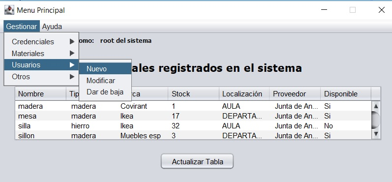

Gestion de usuarios
Solo los usuarios de tipo administrador poseen esta funcion, en ella se podra hacer una gestion de los usuarios registrados en el sistema, las funciones que posee son:
- Agregar a un usuario nuevo, este podrá ser un usuario normal o un administrador
- Editar un usuario
- Dar de baja a un usuario
Imagen del panel en cuestion
